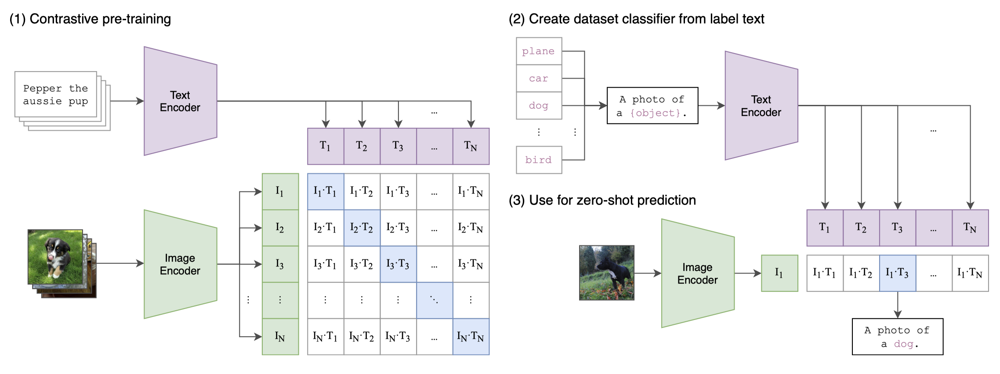
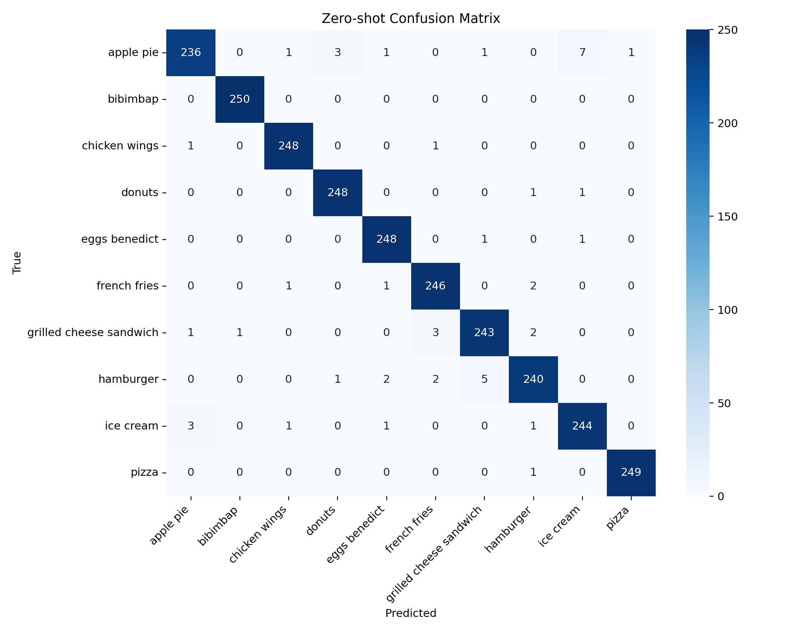
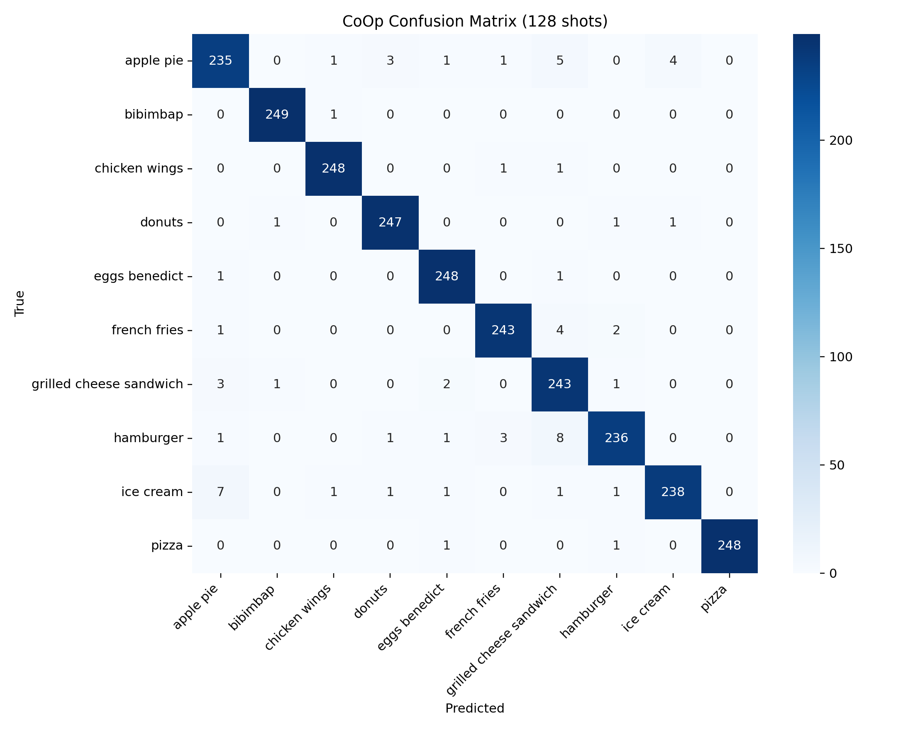

Backbone
ViT-B/32
OpenAI CLIP image-text model with a shared projection space.
Assignment 1 / Multimodal / Model Backbone
Shared CLIP Encoder Zero-Shot + CoOp + Linear ProbeThe entire report is anchored on `openai/clip-vit-base-patch32`. Images are encoded once into a shared embedding space, then evaluated through three heads: averaged prompt prototypes for zero-shot, learnable context prompts for CoOp, and a linear classifier for the few-shot probe baseline.
CLIP ViT-B/32 acts as the fixed representation engine for every route in the report. That design removes backbone retraining from the comparison, which makes the downstream question cleaner: how much adaptation is really needed once a strong image-text encoder is already available?
OpenAI CLIP image-text model with a shared projection space.
Each class is represented by the average of five prompt embeddings in zero-shot mode.
Sixteen learnable context tokens are inserted before the class label by default.
CLIP stays frozen for both CoOp and the linear probe; only the head or prompt context changes.

| Route | Text representation | Trainable part | Inference rule |
|---|---|---|---|
| Zero-shot | Five hand-written prompt templates per class, averaged into one class prototype. | None | Image embedding multiplied with averaged prompt embeddings. |
| CoOp | Class label plus learnable context tokens encoded by frozen CLIP text tower. | Context tokens only | Image embedding compared with learned text embeddings. |
| Linear probe | No text at inference | Linear classifier on frozen image features | Image embedding sent through a trained linear layer. |
image -> CLIP image encoder -> normalized image embedding
zero-shot:
5 prompt templates per class
-> CLIP text encoder
-> average 5 prompt embeddings
-> similarity(image_embed, class_prompt_embed)
CoOp:
class label + learnable context tokens
-> frozen CLIP text encoder
-> learned text embeddings
-> similarity(image_embed, learned_text_embed)
linear probe:
normalized image embedding
-> trainable linear classifier

src/
The actual backbone logic lives in the training and embedding scripts. Zero-shot depends on prompt
averaging from extract_embedding.py, while CoOp and the linear probe are implemented in
train.py.
# assignments/assignment1/multimodal/src/extract_embedding.py
def build_text_embeddings(model, processor, class_names, prompt_templates, device):
for label_id, class_name in enumerate(class_names):
prompts = [template.format(humanize_class_name(class_name)) for template in prompt_templates]
text_inputs = processor(text=prompts, return_tensors="pt", padding=True, truncation=True)
text_outputs = model.get_text_features(**text_inputs)
prompt_embeddings = text_outputs / text_outputs.norm(dim=-1, keepdim=True)
pooled_embedding = prompt_embeddings.mean(dim=0)
pooled_embedding = pooled_embedding / pooled_embedding.norm()
class_embeddings.append(pooled_embedding.cpu())# assignments/assignment1/multimodal/src/train.py
def run_zero_shot(test_payload, text_payload, batch_size):
logit_scale = float(text_payload["logit_scale"])
logits = compute_similarity_logits(
image_embeddings=test_payload["embeddings"],
text_embeddings=text_payload["class_embeddings"],
logit_scale=logit_scale,
batch_size=batch_size,
)
predictions = logits.argmax(dim=-1)
metrics = compute_metrics(
true_labels=test_payload["label_ids"].tolist(),
predicted_labels=predictions.tolist(),
)
return metrics, logits# assignments/assignment1/multimodal/src/train.py
def train_linear_probe(train_embeddings, train_labels, val_embeddings, val_labels, ...):
classifier = nn.Linear(train_embeddings.shape[1], num_classes).to(device)
optimizer = torch.optim.AdamW(classifier.parameters(), lr=learning_rate, weight_decay=weight_decay)
criterion = nn.CrossEntropyLoss()
...
logits = classifier(batch_embeddings)
loss = criterion(logits, batch_labels)